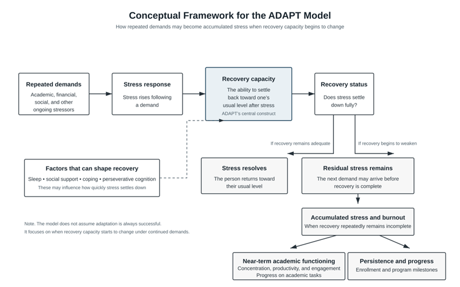

Research model
The ADAPT Model of Stress Reactivity
ADAPT asks a straightforward question: when stress keeps coming, what determines whether a person recovers or begins to carry that stress forward?
Stress does not always end when the demand ends.
People face repeated academic, financial, social, and other everyday demands. A stress response is expected. The concern begins when recovery is incomplete and the next demand arrives before the person has returned to their usual level.
ADAPT is a developing dynamical-systems model for understanding that process. Its central idea is recovery capacity: the ability to settle back after stress. The model examines when that capacity remains adequate, when it begins to weaken, and how residual stress may build over time.
Conceptual framework

What the model is trying to explain.
The model does not assume that adapting to stress is always unsuccessful. It distinguishes between stress that settles down and stress that remains unresolved. Sleep, coping, social support, and other factors may shape how quickly recovery happens.
Over time, the model will be used to study whether changes in recovery capacity help explain burnout, near-term academic functioning, and persistence in graduate education.
Discuss the model ↗